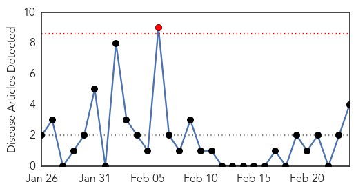
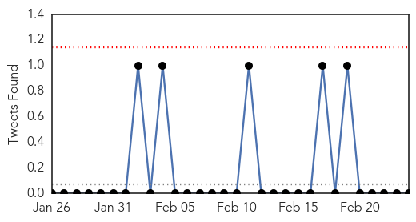
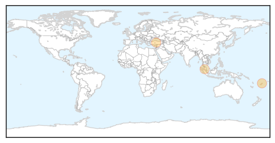

Chikungunya
30-Day Web Trend
1 alerts, 0 warnings

30-Day Twitter Trend
1 alerts, 0 warnings

Article Locations
Article Confidences
Top Articles:
Top Tweets:
-
No tweets found for Feb 24, 2015
Dengue Fever
30-Day Web Trend
2 alerts, 3 warnings
30-Day Twitter Trend
0 alerts, 0 warnings

Article Locations
Article Confidences
Top Articles:
Top Tweets:
- 0.710
- Flavivirus news: MIT develops paper strip to diagnose Ebola, dengue and yellow fever in 10 mins... http://t.co/aACGwu7Rk9 pathogenposse
- 0.658
- Flavivirus news: MIT Lab Develops Rapid Diagnostic Tests For Ebola And Dengue - Forbes: ForbesM... http://t.co/9trXssjfCA pathogenposse